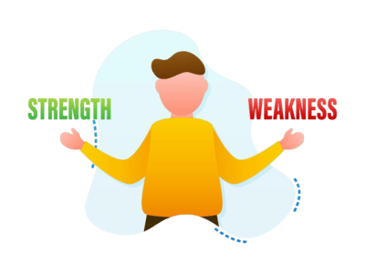

By Kushal Kumar Guha

My Strength and Weakness
I see myself as a writer who is still learning but improving with every assignment. A strength of mine is I can imagine anything so quickly, and I can clearly lay out my ideas and structure in my writing well. For example, the Ethnography Assignment in Week 1 helped me develop my research skills and structure my observations clearly. However, one weakness I still face is making my writing more engaging and personal. Sometimes, my writing feels a bit too factual or formal, and I want to improve my tone to make it more reader-friendly.
My thoughts on writing
At the start of the semester, I thought writing assignments were more about just completing tasks. After learning about Ethnographic Writing (like in Week 5), I now understand that writing in college requires deep thought, research, and an understanding of different genres. College writing isn’t just about writing essays; it’s about thinking critically and using different writing styles to communicate your ideas clearly. But I love it.
How I Have Grown as a Writer as a Student
I have grown as a writer by learning how to revise my work more effectively. In Week 7, I revised my Ethnography based on peer feedback. As a student, I’ve learned how to manage my time better, especially with the Research Proposal and the Annotated Bibliography assignments in Week 9. Although, I was late to submit these assignments most of the time, these tasks showed me how important it is to start early and stay organized. I will definitely use these skills in my future writing tasks.
Strengths and Weaknesses of My Revised Ethnography
My revised ethnography has stronger analysis and better organization than my first draft. I worked on making the structure of my writing clearer after getting feedback during the Peer Review sessions in week 7. However, I think my ethnography still has weaknesses. My Field Research could be deeper in some sections, especially after reading “Friday Night at the Iowa 80” in week 04 and thinking about how to better connect my observations to bigger ideas. I think I need to focus more on the context of the community I’m studying.
My Revision Process for the Final Portfolio
For my Final Portfolio, I focused on both high-order concerns (HOC) and later-order concerns (LOC).
HOC revision: I made my thesis more focused. In my first draft, the thesis wasn’t very specific, and it wasn’t clearly guiding my paper. I revised it in Week 6 after learning about how to analyze ethnography as a genre in class. So, later I had to take another interview for my ethnography to make my thesis clearer. I also worked on the organization of my paper. I tried to make sure each paragraph had a clear topic sentence and that my ideas flowed logically from one to the next. I used the feedback from my peers during the Peer Review session in Week 7 to help me with this.
LOC revision: I worked on sentence clarity, especially after the Peer Review session in Week 7. Some of my sentences were long and hard to follow, so I broke them up into shorter, clearer sentences. And I used Grammarly to check for grammar and punctuation errors. I also made sure to use the right citation style (MLA) for my sources, which I learned about in Week 8.
If I were to do this class over, I would start assignments earlier, especially the Research Proposal (Week 9). I found that I needed more time to gather good sources and analyze them. If I started earlier, I could have done a better job with revisions. However, I would definitely keep attending Peer Review sessions and seeking feedback from the professor. The insights I received helped me improve my work significantly, especially for the Ethnography and Research Proposal.
What I Would Do Differently and What I Would Keep the Same
Advice for Future Students
My advice for future students is to start assignments early (Although I was always late almost every time.) and take advantage of the resources available, like the Writing Center and Peer Review sessions. These resources can help you improve your writing and get feedback on your work. The Ethnographic Research in Week 5 and the Research Proposal in Week 9 require time to gather information and analyze it properly. Also, take full advantage of Peer Review sessions, as they give you a chance to improve your work before the final submission. And, don’t be afraid to ask questions in class or reach out to your professor for help. Writing is a process, and it’s okay to seek support along the way.
**Don’t think about my jacket. To be honest, I have no idea what games they play**